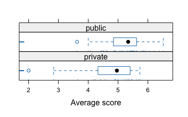
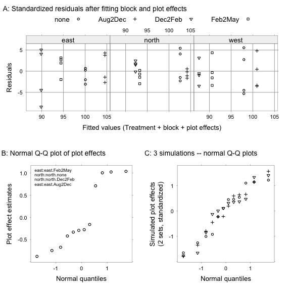
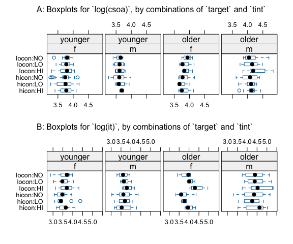
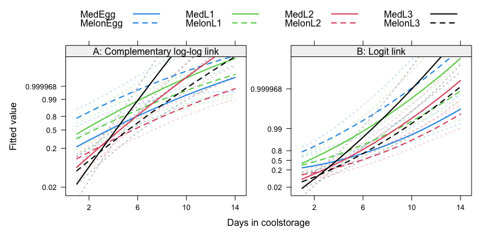
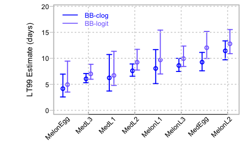

7 Chapter 7: Multilevel models, and repeated measures
Packages required (plus any dependencies)
DAAG lme4 afex MASS utils devtools qra glmmTMB DHARMa MEMSS forecast splines gamlss plotrix nlme
Additionally, knitr and Hmisc are required in order to process the Rmd source file.
Hmisc::knitrSet(basename="mva", lang='markdown', fig.path="figs/g", w=7, h=7)
oldopt <- options(digits=4, formatR.arrow=FALSE, width=70, scipen=999)
library(knitr)
## knitr::render_listings()
opts_chunk[['set']](cache.path='cache-', out.width="80%", fig.align="center",
fig.show='hold', size="small", ps=10, strip.white = TRUE,
comment=NA, width=70, tidy.opts = list(replace.assign=FALSE))Section 7.1 Corn yield data — analysis using aov()
Corn yield measurements example

ant111b <- within(DAAG::ant111b, Site <- reorder(site, harvwt, FUN=mean))
gph <- lattice::stripplot(Site ~ harvwt, data=ant111b,
xlab="Harvest weight of corn")
update(gph, par.settings=DAAG::DAAGtheme(color=FALSE), scales=list(tck=0.5))ant111b <- DAAG::ant111b
ant111b.aov <- aov(harvwt ~ 1 + Error(site), data=ant111b)summary(ant111b.aov)
Error: site
Df Sum Sq Mean Sq F value Pr(>F)
Residuals 7 70.3 10.1
Error: Within
Df Sum Sq Mean Sq F value Pr(>F)
Residuals 24 13.9 0.578 Interpreting the mean squares
Details of the calculations
Practical use of the analysis of variance results
Random effects vs. fixed effects
Nested factors – a variety of applications
Subsection 7.1.1: A More Formal Approach
Relations between variance components and mean squares
Interpretation of variance components
Intra-class correlation
Section 7.2 Analysis using lme4::lmer()
library(lme4)
ant111b.lmer <- lmer(harvwt ~ 1 + (1 | site), data=ant111b)## Note that there is no degrees of freedom information.
print(ant111b.lmer, ranef.comp="Variance")Linear mixed model fit by REML ['lmerMod']
Formula: harvwt ~ 1 + (1 | site)
Data: ant111b
REML criterion at convergence: 94.42
Random effects:
Groups Name Variance
site (Intercept) 2.368
Residual 0.578
Number of obs: 32, groups: site, 8
Fixed Effects:
(Intercept)
4.29 The processing of output from lmer()
coef(summary(ant111b.lmer)) Estimate Std. Error t value
(Intercept) 4.292 0.5604 7.659Fitted values and residuals in lmer()
s2W <- 0.578; s2L <- 2.37; n <- 4
sitemeans <- with(ant111b, sapply(split(harvwt, site), mean))
grandmean <- mean(sitemeans)
shrinkage <- (n*s2L)/(n*s2L+s2W)
## Check that fitted values equal BLUPs, and compare with site means
BLUP <- grandmean + shrinkage*(sitemeans - grandmean)
BLUP <- fitted(ant111b.lmer)[match(names(sitemeans), ant111b$site)]
BLUP <- grandmean + ranef(ant111b.lmer)$site[[1]]rbind(BLUP=BLUP, sitemeans=sitemeans) DBAN LFAN NSAN ORAN OVAN TEAN WEAN WLAN
BLUP 4.851 4.212 2.217 6.764 4.801 3.108 5.455 2.925
sitemeans 4.885 4.207 2.090 6.915 4.833 3.036 5.526 2.841*Uncertainty in the parameter estimates — profile likelihood and alternatives
prof.lmer <- profile(ant111b.lmer)
CI95 <- confint(prof.lmer, level=0.95)
rbind("sigmaL^2"=CI95[1,]^2, "sigma^2"=CI95[2,]^2) 2.5 % 97.5 %
sigmaL^2 0.7965 6.936
sigma^2 0.3444 1.079CI95[3,] 2.5 % 97.5 %
3.128 5.456 library(lattice)
gph <- xyplot(prof.lmer, conf=c(50, 80, 95, 99)/100,
aspect=0.8, between=list(x=0.35))
update(gph, scales=list(tck=0.5), ylab="Normal deviate")Modeling more than two levels of random variation
Section 7.3 Survey data, with clustering

## Means of like (data frame science: DAAG), by class
science <- DAAG::science
classmeans <- with(science, aggregate(like, by=list(PrivPub, Class), mean))
# NB: Class identifies classes independently of schools
# class identifies classes within schools
names(classmeans) <- c("PrivPub", "Class", "avlike")
gph <- bwplot(~avlike|PrivPub, layout=c(1,2), xlab="Average score",
panel=function(x,y,...){panel.bwplot(x,y,...)
panel.rug(x,y,...)}, data=classmeans)
update(gph, scales=list(tcl=0.4))Subsection 7.3.1: Alternative models
science <- DAAG::science
science.lmer <- lmer(like ~ sex + PrivPub + (1 | school) +
(1 | school:class), data = science,
na.action=na.exclude)print(VarCorr(science.lmer), comp="Variance", digits=2) Groups Name Variance
school:class (Intercept) 0.32
school (Intercept) 0.00
Residual 3.05 print(coef(summary(science.lmer)), digits=2) Estimate Std. Error t value
(Intercept) 4.72 0.162 29.1
sexm 0.18 0.098 1.9
PrivPubpublic 0.41 0.186 2.2summary(science.lmer)$ngrpsschool:class school
66 41 science1.lmer <- lmer(like ~ sex + PrivPub + (1 | school:class),
data = DAAG::science, na.action=na.exclude)print(VarCorr(science1.lmer), comp="Variance", digits=3) Groups Name Variance
school:class (Intercept) 0.321
Residual 3.052 print(coef(summary(science1.lmer)), digits=2) Estimate Std. Error t value
(Intercept) 4.72 0.162 29.1
sexm 0.18 0.098 1.9
PrivPubpublic 0.41 0.186 2.2opt <- options(contrasts=c("contr.sum","contr.poly"))
# Change is otherwise made as and if required for individual factors
# prior to fitting model, and a warning message is generated.
afex::mixed(like ~ sex + PrivPub + (1 | school:class), method="KR", type=2,
data = na.omit(science), sig_symbols=rep("",4), progress=FALSE)Mixed Model Anova Table (Type 2 tests, KR-method)
Model: like ~ sex + PrivPub + (1 | school:class)
Data: na.omit(science)
Effect df F p.value
1 sex 1, 1379.49 3.44 .064
2 PrivPub 1, 60.44 4.91 .030options(opt) # Reset to previous contrasts settingMore detailed examination of the output
## Use profile likelihood
pp <- profile(science1.lmer, which="theta_")
# which="theta_": all random parameters
# which="beta_": fixed effect parameters
var95 <- confint(pp, level=0.95)^2
# Square to get variances in place of SDs
rownames(var95) <- c("sigma_Class^2", "sigma^2")
signif(var95, 3) 2.5 % 97.5 %
sigma_Class^2 0.178 0.511
sigma^2 2.830 3.300## Fit model and generate quantities that will be plotted
science1.lmer <- lmer(like ~ sex + PrivPub + (1 | school:class),
data = science, na.action=na.omit)
## Panel A: random site effects vs number in class
ranf <- ranef(obj = science1.lmer, drop=TRUE)[["school:class"]]
flist <- science1.lmer@flist[["school:class"]]
privpub <- science[match(names(ranf), flist), "PrivPub"]
num <- unclass(table(flist)); numlabs <- pretty(num)
## Panel B: Within class variance estimates vs numbers
res <- residuals(science1.lmer)
vars <- tapply(res, INDEX=list(flist), FUN=var)*(num-1)/(num-2)
## Panel C: Normal probability of random site effects (`ranf`)
## Panel D: Normal probability of residuals (`res`)opar <- par(oma=c(0,0,1.5,0))
## Panel A: Plot effect estimates vs number
xlab12 <- "# in class (square root scale)"
plot(sqrt(num), ranf, xaxt="n", pch=c(1,3)[as.numeric(privpub)], cex=0.8,
xlab=xlab12, ylab="Estimate of class effect", fg="gray")
lines(lowess(sqrt(num[privpub=="private"]),
ranf[privpub=="private"], f=1.1), lty=2)
lines(lowess(sqrt(num[privpub=="public"]),
ranf[privpub=="public"], f=1.1), lty=3)
axis(1, at=sqrt(numlabs), labels=paste(numlabs), lwd=0, lwd.ticks=1)
## Panel B: Within class variance estimates vs numbers
plot(sqrt(num), vars, pch=c(1,3)[unclass(privpub)], cex=0.8,
xlab=xlab12, ylab="Within-class variance", fg="gray")
lines(lowess(sqrt(num[privpub=="private"]),
as.vector(vars)[privpub=="private"], f=1.1), lty=2)
lines(lowess(sqrt(num[privpub=="public"]),
as.vector(vars)[privpub=="public"], f=1.1), lty=3)
## Panel C: Normal quantile-quantile plot of site effects
qqnorm(ranf, ylab="Ordered site effects", cex=0.8, main="",
col="gray40", fg="gray")
## Panel D: Normal quantile-quantile plot of residuals
qqnorm(res, ylab="Ordered w/i class residuals", cex=0.8, main="",
col="gray40", fg="gray")
par(fig = c(0, 1, 0, 1), oma = c(0, 0, 0, 0), mar = c(0, 0, 0, 0),
new = TRUE)
plot(0, 0, type = "n", bty = "n", xaxt = "n", yaxt = "n")
legend(x="top", legend=c("Private ", "Public"), pch=c(1,3),
lwd=c(1,1), lty=2:3, cex=1.25,
xjust=0.5, yjust=0.8, horiz=TRUE, merge=FALSE, bty="n")
par(opar)Subsection 7.3.2: Instructive, though faulty, analyses
Ignoring class as the random effect
science2.lmer <- lmer(like ~ sex + PrivPub + (1 | school),
data = science, na.action=na.exclude)
print(coef(summary(science2.lmer)), digits=3) Estimate Std. Error t value
(Intercept) 4.738 0.163 29.00
sexm 0.197 0.101 1.96
PrivPubpublic 0.417 0.185 2.25## NB: Output is misleading
print(VarCorr(science2.lmer), comp="Variance", digits=3) Groups Name Variance
school (Intercept) 0.166
Residual 3.219 Ignoring the random structure in the data
## Faulty analysis, using lm
science.lm <- lm(like ~ sex + PrivPub, data=science)
round(coef(summary(science.lm)), digits=4) Estimate Std. Error t value Pr(>|t|)
(Intercept) 4.7402 0.0996 47.616 0.0000
sexm 0.1509 0.0986 1.531 0.1261
PrivPubpublic 0.3951 0.1051 3.759 0.0002Subsection 7.3.3: Predictive accuracy
Section 7.4 A multilevel experimental design
par(mar=rep(0.25,4))
MASS::eqscplot(c(0,13),c(4.0,13),type="n",xlab="",ylab="", asp=1, axes=F)
eps <- 0.1
suby <- 12
vines<-function(x=1,y=1,subp=0, suby=12){
lines(c(y,y,y+1,y+1,y), suby-c(x,x+1,x+1,x,x),lwd=0.5)
points(c(y+.2,y+.2,y+.8,y+.8),suby-c(x+.2,x+.8,x+.8,x+.2),pch=3,cex=0.65)
text(y+.5,suby-(x+.5),paste(subp))
}
k<-0
for(i in c(1,3,5,7)){k<-k+1; vines(1,i,c(3,1,0,2)[k])}
k<-0
for(i in c(1,3,5,7)){k<-k+1; vines(4,i,c(2,1,0,3)[k])}
k <- 0
for(i in c(1,4,4,1)){k<-k+1
j<-c(9,9,11,11)[k]
vines(i,j,c(3,2,1,0)[k])
}
lines(c(2*eps,2.85,NA,10.15,13-2*eps), suby-c(3,3,NA,3,3),lty=2)
lines(c(0,2.85,NA,10.15,13),suby-c(0,0,NA,0,0),lty=2)
lines(c(0,4.5,NA,8.5,13),suby-c(8,8,NA,8,8),lty=2)
lines(rep(0,5),suby-c(0,1.25,NA,6.75,8),lty=2)
lines(rep(13,5),suby-c(0,1.25,NA,6.75,8),lty=2)
lines(c(9,9,12,12,9)+c(-eps,-eps,eps,eps,-eps),
suby-(c(1,5,5,1,1)+c(-eps,eps,eps,-eps,-eps)), lwd=1)
lines(c(1,1,8,8,1)+c(-eps,-eps,eps,eps,-eps),
suby-c(c(1,2,2,1,1)+c(-eps,eps,eps,-eps,-eps)), lwd=1)
lines(c(1,1,8,8,1)+c(-eps,-eps,eps,eps,-eps),
suby-c(c(1,2,2,1,1)+3+c(-eps,eps,eps,-eps,-eps)), lwd=1)
text(6.5,suby,"6 meters height artifical shelter belt")
text(0,suby-4,"9 meters height shelter belt", srt=90)
text(13,suby-4,"19 meters height shelter belt", srt=-90)
text(6.5,suby-8,"Willow shelter belt")
text(0.5,suby-6.5,"0 Unshaded \n1 Shaded Aug-Dec \n2 Dec-Feb \n3 Feb-May", adj=0)
text(6.5,suby-3,"16 meters height willow shelter belt")
offset <- c(4.75, 4.75-sqrt(3)*0.5)/6
arrows(x0=0,y0=12.1, x1=0+offset[1], y1=12.1+offset[2], length=0.15)
text(0.17, 12.55,"N")Subsection 7.4.1: The analysis of variance (anova) table
## Analysis of variance: data frame kiwishade (DAAG)
kiwishade <- DAAG::kiwishade
kiwishade.aov <- aov(yield ~ shade + Error(block/shade),
data=kiwishade)
summary(kiwishade.aov)
Error: block
Df Sum Sq Mean Sq F value Pr(>F)
Residuals 2 172 86.2
Error: block:shade
Df Sum Sq Mean Sq F value Pr(>F)
shade 3 1395 465 22.2 0.0012
Residuals 6 126 21
Error: Within
Df Sum Sq Mean Sq F value Pr(>F)
Residuals 36 439 12.2 Subsection 7.4.2: Expected values of mean squares
model.tables(kiwishade.aov, type="means", cterms="shade")Tables of means
Grand mean
96.53
shade
shade
none Aug2Dec Dec2Feb Feb2May
100.20 103.23 89.92 92.77 ## Calculate treatment means
with(kiwishade, sapply(split(yield, shade), mean)) none Aug2Dec Dec2Feb Feb2May
100.20 103.23 89.92 92.77 Subsection 7.4.3: * The analysis of variance sums of squares breakdown
## For each plot, calculate mean, and differences from the mean
vine <- paste("vine", rep(1:4, 12), sep="")
vine1rows <- seq(from=1, to=45, by=4)
kiwivines <- unstack(kiwishade, yield ~ vine)
kiwimeans <- apply(kiwivines, 1, mean)
kiwivines <- cbind(kiwishade[vine1rows, c("block","shade")],
Mean=kiwimeans, kiwivines-kiwimeans)
kiwivines <- with(kiwivines, kiwivines[order(block, shade), ])
mean(kiwimeans) # the grand mean[1] 96.53kiwishade <- DAAG::kiwishade
kiwimeans <- with(kiwishade, aggregate(yield,by=list(block,shade),mean))
names(kiwimeans) <- c("block","shade","meanyield")
plotmeans.lm <- lm(meanyield~block+shade, data=kiwimeans)
effects <- predict(plotmeans.lm, type="terms")
kiwishade.lm <- lm(yield ~ block*shade, data=kiwishade)
y <- c(effects[,"block"]/sqrt(2) * sqrt(16),
effects[,"shade"]/sqrt(3) * sqrt(12),
residuals(plotmeans.lm)/sqrt(6) * sqrt(4),
residuals(kiwishade.lm)/sqrt(12))
n <- rep(4:1, c(12, 12, 12, 48))
gps <- rep(c("block effect\n(ms=86.2)", "shade\n(464.8)",
"plot\n(20.9)", "vine\n(12.2)"), c(12, 12, 12, 48))
gps <- factor(gps, levels = rev(c("block effect\n(ms=86.2)",
"shade\n(464.8)", "plot\n(20.9)", "vine\n(12.2)")))
gps.sd <- sapply(split(y,gps), sd)
gps.av <- sapply(split(y,gps), mean)
plot(range(y), range(n)+c(-0.5, 0.5), xlab="", ylab="", yaxt="n", type="n", fg="gray")
text(y, n+0.15, "|", cex=0.8, col=adjustcolor("black", alpha.f=0.5))
un <- 1:4
sapply(un, function(j){lines(gps.av[j]+c(-gps.sd[j], gps.sd[j]),
rep(j-0.15,2), col="gray")
lines(rep(gps.av[j],2)-gps.sd[j],
j-0.15+c(-.06, .06), col="gray")
lines(rep(gps.av[j],2)+gps.sd[j],
j-0.15+c(-.06, .06), col="gray")
})
mtext(side=1,line=2.25, cex=0.9,
text="Variation in Yield (kg)\n(Add to grand mean of yield = 96.53)")
par(las=2)
axis(2, at=1:4, labels=levels(gps), lwd=0, lwd.ticks=1)Subsection 7.4.4: The variance components
Subsection 7.4.5: The mixed model analysis
kiwishade.lmer <- lmer(yield ~ shade + (1|block) + (1|block:plot),
data=kiwishade)
# block:shade is an alternative to block:plotprint(kiwishade.lmer, ranef.comp="Variance", digits=3)Linear mixed model fit by REML ['lmerMod']
Formula: yield ~ shade + (1 | block) + (1 | block:plot)
Data: kiwishade
REML criterion at convergence: 252
Random effects:
Groups Name Variance
block:plot (Intercept) 2.19
block (Intercept) 4.08
Residual 12.18
Number of obs: 48, groups: block:plot, 12; block, 3
Fixed Effects:
(Intercept) shadeAug2Dec shadeDec2Feb shadeFeb2May
100.20 3.03 -10.28 -7.43 Residuals and estimated effects

## Panel A
parsetA <- modifyList(DAAG::DAAGtheme(color=FALSE),
list(layout.heights=list(key.top=2.25, axis.top=.75)))
if (!exists("kiwishade.lmer"))
kiwishade.lmer <- lme4::lmer(yield ~ shade + (1|block/shade), data=kiwishade)
pk1 <- xyplot(residuals(kiwishade.lmer) ~ fitted(kiwishade.lmer)|block,
groups=shade, layout=c(3,1), par.strip.text=list(cex=1.0),
data=kiwishade, grid=TRUE,
xlab="Fitted values (Treatment + block + plot effects)",
ylab="Residuals",
main=list(label="A: Standardized residuals after fitting block and plot effects",
cex=1.05, x=0.01, y=0, font=1, just="left"),
auto.key=list(space='top', points=TRUE, columns=4))
print(update(pk1, scales=list(x=list(alternating=TRUE), tck=0.35),
par.settings=parsetA), position=c(0,.52,1,1))
## Panel B
ploteff <- ranef(kiwishade.lmer, drop=TRUE)[[1]]
nam <- names(sort(ploteff, decreasing=TRUE)[1:4])
parsetB <- modifyList(DAAG::DAAGtheme(color=FALSE),
list(layout.heights=list(axis.top=0.85)))
pk2 <- qqmath(ploteff, ylab="Plot effect estimates",
key=list(x=0, y=0.98, corner=c(0,1),
text=list(labels=nam, cex=0.65)),
main=list(label="B: Normal Q-Q plot of plot effects",
cex=1.05, x=0.01, y=0.25, font=1, just="left"),
xlab="Normal quantiles")
print(update(pk2, scales=list(tck=0.35), par.settings=parsetB),
newpage=FALSE, position=c(0,0,.5,.5))
## Panel C
simvals <- simulate(kiwishade.lmer, nsim=3, seed=23)
simranef <- function(y)ranef(lme4::refit(kiwishade.lmer, y))[[1]]
simeff <- apply(simvals, 2, function(y) scale(simranef(y)))
simeff <- as.data.frame(simeff)
pk3 <- qqmath(~ sim_1+sim_2+sim_3, data=simeff,
ylab="Simulated plot effects\n(2 sets, standardized)",
Qs=list(tck=0.35), aspect=1,
main=list(label="C: 3 simulations -- normal Q-Q plots",
x=0.01, y=0.25, cex=1.05, font=1, just="left"),
xlab="Normal quantiles")
print(update(pk3, scales=list(tck=0.35), par.settings=parsetB),
newpage=FALSE, position=c(0.48,0,1,.5))with(kiwishade, sapply(split(yield, shade), mean)) none Aug2Dec Dec2Feb Feb2May
100.20 103.23 89.92 92.77 Subsection 7.4.6: Predictive accuracy
Section 7.5 Within and between subject effects

library(lattice)
tinting <- within(DAAG::tinting, targtint <- paste(target,toupper(tint),sep=':'))
gphA <- bwplot(targtint~log(csoa) | sex*agegp, data=tinting, layout=c(4,1), between=list(x=0.25))
mainA <- list("A: Boxplots for `log(csoa)`, by combinations of `target` and `tint`",
font=1, x=0.125, y=0.125, cex=1.0, just='left')
gphB <- bwplot(targtint~log(it) | sex*agegp, data=tinting, layout=c(4,1), between=list(x=0.25))
mainB <- list("B: Boxplots for `log(it)`, by combinations of `target` and `tint`",
font=1, x=0.125, y=0.125, cex=1.0, just='left')
print(update(gphA, main=mainA, xlab=""), position=c(0, 0.48, 1, 1.0), more=T)
print(update(gphB, main=mainB, xlab=""), position=c(0,0,1,0.52))Model fitting criteria
Subsection 7.5.1: Model selection
## Capitalize tinting$agegp
levels(tinting$agegp) <- R.utils::capitalize(levels(tinting$agegp))
## Fit all interactions: data frame tinting (DAAG)
it3.lmer <- lmer(log(it) ~ tint*target*agegp*sex + (1 | id),
data=DAAG::tinting, REML=FALSE)it2.lmer <- lmer(log(it) ~ (tint+target+agegp+sex)^2 + (1 | id),
data=DAAG::tinting, REML=FALSE)it1.lmer <- lmer(log(it)~(tint+target+agegp+sex) + (1 | id),
data=DAAG::tinting, REML=FALSE)anova(it1.lmer, it2.lmer, it3.lmer)Data: DAAG::tinting
Models:
it1.lmer: log(it) ~ (tint + target + agegp + sex) + (1 | id)
it2.lmer: log(it) ~ (tint + target + agegp + sex)^2 + (1 | id)
it3.lmer: log(it) ~ tint * target * agegp * sex + (1 | id)
npar AIC BIC logLik deviance Chisq Df Pr(>Chisq)
it1.lmer 8 1.14 26.8 7.43 -14.9
it2.lmer 17 -3.74 50.7 18.87 -37.7 22.88 9 0.0065
it3.lmer 26 8.15 91.5 21.93 -43.9 6.11 9 0.7288## Code that gives the first four such plots, for the observed data
interaction.plot(tinting$tint, tinting$agegp, log(tinting$it))
interaction.plot(tinting$target, tinting$sex, log(tinting$it))
interaction.plot(tinting$tint, tinting$target, log(tinting$it))
interaction.plot(tinting$tint, tinting$sex, log(tinting$it))Subsection 7.5.2: Estimates of model parameters
it2.reml <- update(it2.lmer, REML=TRUE)
print(coef(summary(it2.reml)), digits=2) Estimate Std. Error t value
(Intercept) 3.6191 0.130 27.82
tint.L 0.1609 0.044 3.64
tint.Q 0.0210 0.045 0.46
targethicon -0.1181 0.042 -2.79
agegpolder 0.4712 0.233 2.02
sexm 0.0821 0.233 0.35
tint.L:targethicon -0.0919 0.046 -2.00
tint.Q:targethicon -0.0072 0.048 -0.15
tint.L:agegpolder 0.1308 0.049 2.66
tint.Q:agegpolder 0.0697 0.052 1.34
tint.L:sexm -0.0979 0.049 -1.99
tint.Q:sexm 0.0054 0.052 0.10
targethicon:agegpolder -0.1389 0.058 -2.38
targethicon:sexm 0.0779 0.058 1.33
agegpolder:sexm 0.3316 0.326 1.02# NB: The final column, giving degrees of freedom, is not in the
# summary output. It is our addition.subs <- with(tinting, match(unique(id), id))
with(tinting, table(sex[subs], agegp[subs]))
Younger Older
f 9 4
m 4 9Section 7.6 A mixed model with a betabinomial error
Subsection 7.6.1: The betabinomial distribution
## devtools::install_github("jhmaindonald/qra") # Use if not found on CRANNotation
Source of data
HawCon <- within(as.data.frame(qra::HawCon), {
trtGp <- gsub("Fly", "", paste0(CN,LifestageTrt))
trtGp <- factor(trtGp, levels=sort(unique(trtGp))[c(1,5,2,6,3,7,4,8)])
trtGpRep <- paste0(CN,LifestageTrt,":",RepNumber)
scTime <- scale(TrtTime) # Centering and scaling can help model fit
})## Load packages that will be used
suppressMessages(library(lme4)); suppressMessages(library(glmmTMB))library(splines)
form <- cbind(Dead,Live)~0+trtGp/TrtTime+(1|trtGpRep)
## Add the quadratic term from a degree 2 orthogonal polynomial
form2s <- update(form, . ~ . + scale(scTime^2))
## Scale "corrections" to reduce risk of potential numerical problems
HCbb.cll <- glmmTMB(form, dispformula=~trtGp+ns(scTime,2),
family=glmmTMB::betabinomial(link="cloglog"), data=HawCon)
HCbb2s.cll <- update(HCbb.cll, formula=form2s)
HCbb.logit <- glmmTMB(form, dispformula=~trtGp+ns(scTime,2),
family=glmmTMB::betabinomial(link="logit"), data=HawCon)
HCbb2s.logit <- update(HCbb.logit, formula=form2s)summary(HCbb2s.cll)$coefficients$cond["scale(scTime^2)",] ## CLL Estimate Std. Error z value Pr(>|z|)
-0.09130 0.06143 -1.48627 0.13721 summary(HCbb2s.logit)$coefficients$cond["scale(scTime^2)",] ## Logit Estimate Std. Error z value Pr(>|z|)
0.43219 0.17766 2.43268 0.01499 AICtab <- AIC(BB=HCbb.cll,HCbb2s.cll,HCbb.logit,HCbb2s.logit)
AICtab[['Details']] <- c(paste0('BB: Compl. log-log', c('', ', added curve')),
paste0('BB: Logit', c('', ', added curve')))
AICtab[order(AICtab[["AIC"]]), ] df AIC Details
HCbb2s.cll 28 709.9 BB: Compl. log-log
HCbb.cll 27 710.0 BB: Compl. log-log, added curve
HCbb2s.logit 28 717.2 BB: Logit, added curve
HCbb.logit 27 721.7 BB: Logit
dat <- expand.grid(trtGp=factor(levels(HawCon$trtGp), levels=levels(HawCon$trtGp)),
TrtTime=pretty(range(HawCon$TrtTime),15), trtGpRep=NA)
ab <- qra::getScaleCoef(HawCon$scTime)
dat$scTime <- with(dat,(TrtTime-ab[1])/ab[2])
hatClog <- predict(HCbb2s.cll, newdata=dat)
hatClog <- predict(HCbb2s.cll, se=T, newdata=dat)
hatLgt <- predict(HCbb2s.logit, newdata=dat)
hatLgt <- predict(HCbb2s.logit, se=T, newdata=dat)
dat2 <- cbind(rbind(dat,dat), link=rep(c('clog','logit'), rep(nrow(dat),2)))
dat2 <- within(dat2, {fit<-c(hatClog$fit,hatLgt$fit);
se.fit<-c(hatClog$se.fit,hatLgt$se.fit);
link=rep(c('clog','logit'), rep(nrow(dat),2))})
dat2 <- within(dat2, {lwr<-fit-2*se.fit; upr<-fit+2*se.fit})
library(lattice)
my.panel.bands <- function(x, y, upper, lower, fill, col,
subscripts, ..., font, fontface)
{
upper <- upper[subscripts]
lower <- lower[subscripts]
panel.lines(x,lower, ...)
panel.lines(x,upper, ...)
}
panel2 <- function(x, y, ...){
panel.superpose(x, y, panel.groups = my.panel.bands, type='l', lty=3, alpha=0.25,...)
panel.xyplot(x, y, type='l', lwd=2, cex=0.6, ...)
}
parset <- simpleTheme(col=rep(4:1,rep(2,4)), lty=rep(1:2, 4), lwd=2)
## c('solid','1141')
p <- c(.02,.2,.5,.8, .99, .999968)
cloglog <- make.link('cloglog')$linkfun
logit <- make.link('logit')$linkfun
fitpos <- list(cloglog(p), logit(p))
lab <- paste(p)
lim <- list(cloglog(c(0.02, 0.99998)), logit(c(0.02, 0.99998)))
lim <- lapply(lim, function(x)c(x[1],x[1]+diff(x)*1.2))
gph <- xyplot(fit~TrtTime|link, outer=TRUE, data=dat2, groups=trtGp,
upper = dat2$upr, lower = dat2$lwr, panel = panel2,
xlab="Days in coolstorage", ylab="Fitted value",
auto.key=list(text=levels(HawCon$trtGp), columns=4,
points=FALSE, lines=TRUE),
par.settings=parset, layout=c(2,1),
scales=list(x=list(at=c(2,6,10,14)),
y=list(relation='free',
at=fitpos, labels=lab, limits=lim), alternating=c(1,1)))
update(gph, strip=strip.custom(factor.levels=c("A: Complementary log-log link",
"B: Logit link")))parset <- DAAG::DAAGtheme(color=TRUE, col.points=rep(1:4,rep(2,4)),
pch=rep(1:4,2), lwd=2)
HawCon$rho2clog <- qra::getRho(HCbb.cll)
HawCon$dispClog <- with(HawCon, 1+(Total-1)*rho2clog)
par(oma=c(0,0,2,0))
titles=c(expression("A: "*rho*", cloglog link"),expression("B: "*rho*", logit link"),
expression("C: Dispersion "*Phi*" (Panel A)"))
library(lattice)
HawCon$rho2logit <- qra::getRho(HCbb.logit)
xyplot(rho2clog+rho2logit+dispClog ~ TrtTime, groups=trtGp, data=HawCon,
outer=TRUE, between=list(x=0.25), par.settings=parset,
scales=list(x=list(alternating=FALSE,at=c(4,8,12), labels=paste(c(4,8,12))),
y=list(relation='free',tick.number=4)),
auto.key=list(columns=4, between.columns=2, between=1),
xlab="Days in coolstorage", ylab="Parameter Estimate",
strip=strip.custom(factor.levels=titles))Subsection 7.6.2: Diagnostic checks

par(oma=c(0,0,2,0.5))
## Code for plots, excluding main titles
set.seed(29)
simRef <- DHARMa::simulateResiduals(HCbb.cll, n=250, seed=FALSE)
DHARMa::plotQQunif(simRef)
title(main="A: Q-Q plot, quantile residuals", adj=0, line=2.5,
font.main=1, cex.main=1.25)
DHARMa::plotResiduals(simRef, form=HawCon$trtGp)
axis(1, at=c(2,4,6,8), labels=levels(HawCon$trtGp)[c(2,4,6,8)],
gap.axis=0, line=1, lwd=0)
title(main="B: Boxplots comparing treatment groups", adj=0, line=2.5,
font.main=1, cex.main=1.25)
DHARMa::plotResiduals(simRef)
title(main="C: Plot against model predictions", adj=0, font.main=1, line=3.25,
cex.main=1.25)
DHARMa::plotResiduals(simRef, form=HawCon$Total)
title(main="D: Plot against total number", adj=0, font.main=1, line=3.25,
cex.main=1.25)Subsection 7.6.3: Lethal time estimates and confidence intervals
shorten <- function(nam, leaveout=c('trtGp','Fly',':')){
for(txt in leaveout){
nam <- gsub(txt,'', nam, fixed=TRUE)
}
nam
}LTbb.cll <- qra::extractLT(p=0.99, obj=HCbb.cll, link="cloglog",
a=1:8, b=9:16, eps=0, df.t=NULL)[,-2]
rownames(LTbb.cll) <- gsub("trtGp|Fly|:", '', rownames(LTbb.cll), perl=T)LTbb.logit <- qra::extractLT(p=0.99, obj=HCbb.logit, link="logit",
a=1:8, b=9:16, eps=0, offset=0,
df.t=NULL)[,-2]
rownames(LTbb.logit) <- shorten(rownames(LTbb.logit))
library(plotrix)
gpNam <- rownames(LTbb.cll)
ordEst <- order(LTbb.cll[,1])
col5 <- c("blue","lightslateblue","blueviolet",'gray50','gray80')
plotCI(1:8-0.1, y=LTbb.cll[ordEst,1], ui=LTbb.cll[ordEst,3],
li=LTbb.cll[ordEst,2], lwd=2, col=col5[1], xaxt="n",
fg="gray", xlab="", ylab="LT99 Estimate (days)",
xlim=c(0.8,8.2), ylim=c(0,19.5))
plotCI(1:8+0.1, y=LTbb.logit[ordEst,1], ui=LTbb.logit[ordEst,3],
li=LTbb.logit[ordEst,2], lwd=2, col=col5[2], xaxt="n", add=TRUE)
axis(1, labels=FALSE, tck=0.02, col.ticks="gray40")
text(x = 1:length(gpNam)+0.1,
## Move labels to just below bottom of chart.
y = par("usr")[3] - 0.8,
labels = gpNam[ordEst], ## Use names from the data list.
xpd = NA, ## Change the clipping region
srt = 45, ## Rotate the labels by 45 degrees.
adj = 0.95) ## Adjust the labels to almost 100% right-justified
grid()
legend("topleft", legend=c("BB-clog", "BB-logit"),
inset=c(0.01,0.01), lty=c(1,1), col=col5[1:2],
text.col=col5[1:2], bty="n",y.intersp=0.85)HCbin.cll <- glmmTMB(cbind(Dead,Live)~0+trtGp/TrtTime+(scTime|trtGp),
family=binomial(link="cloglog"), data=HawCon)LTbin.cll <- qra::extractLT(p=0.99, obj=HCbin.cll,
a=1:8, b=9:16, eps=0, df.t=NULL)[,-2]
rownames(LTbin.cll) <- shorten(rownames(LTbin.cll))A warning against over-interpretation
Section 7.7 Observation level random effects — the moths dataset
moths <- DAAG::moths
moths$transect <- 1:41 # Each row is from a different transect
moths$habitat <- relevel(moths$habitat, ref="Lowerside")
A.glmer <- glmer(A~habitat+sqrt(meters)+(1|transect),
family=poisson(link=sqrt), data=moths)
print(summary(A.glmer), show.resid=FALSE, correlation=FALSE, digits=3)Generalized linear mixed model fit by maximum likelihood (Laplace
Approximation) [glmerMod]
Family: poisson ( sqrt )
Formula: A ~ habitat + sqrt(meters) + (1 | transect)
Data: moths
AIC BIC logLik deviance df.resid
212.6 229.7 -96.3 192.6 31
Random effects:
Groups Name Variance Std.Dev.
transect (Intercept) 0.319 0.564
Number of obs: 41, groups: transect, 41
Fixed effects:
Estimate Std. Error z value Pr(>|z|)
(Intercept) 1.7322 0.3513 4.93 0.00000082
habitatBank -2.0415 0.9377 -2.18 0.029
habitatDisturbed -1.0359 0.4071 -2.54 0.011
habitatNEsoak -0.7319 0.4323 -1.69 0.090
habitatNWsoak 2.6787 0.5101 5.25 0.00000015
habitatSEsoak 0.1178 0.3923 0.30 0.764
habitatSWsoak 0.3900 0.5260 0.74 0.458
habitatUpperside -0.3135 0.7549 -0.42 0.678
sqrt(meters) 0.0675 0.0631 1.07 0.285suppressPackageStartupMessages(library(gamlss))
A1quasi.glm <- glm(A~habitat, data=moths, family=quasipoisson(link=sqrt))
Asqrt.lss <- gamlss(A ~ habitat + sqrt(meters), trace=FALSE,
family = NBI(mu.link='sqrt'), data = moths)
A1.glmer <- glmer(A~habitat+(1|transect), data=moths, family=poisson(link=sqrt))Cglm <- coef(summary(A1quasi.glm))
Cglmer <- coef(summary(A1.glmer))
fitAll <- cbind("quasi-Coef"=Cglm[-1,1], "quasi-SE"=Cglm[-1,2],
"NBI-Coef"=coef(Asqrt.lss)[2:8], "NBI-SE"=c(0.94,.41,.43,.51,.39,.53,.75),
"glmer-Coef"=Cglmer[-1,1], "glmer-SE"=Cglmer[-1,2])
rownames(fitAll) <- substring(rownames(fitAll),8)
round(fitAll, 2) # NB, all SEs are for the difference from 'Lowerside' quasi-Coef quasi-SE NBI-Coef NBI-SE glmer-Coef glmer-SE
Bank -2.13 0.86 -2.19 0.94 -1.99 0.95
Disturbed -1.07 0.41 -1.00 0.41 -1.13 0.40
NEsoak -0.61 0.43 -0.80 0.43 -0.57 0.41
NWsoak 2.73 0.54 2.67 0.51 2.73 0.51
SEsoak 0.16 0.41 0.09 0.39 0.19 0.39
SWsoak 0.45 0.54 0.28 0.53 0.54 0.51
Upperside 0.23 0.45 -0.41 0.75 0.36 0.43detach("package:glmmTMB", character.only=TRUE)Section 7.8 Repeated measures in time
The theory of repeated measures modeling
*Correlation structure
Different approaches to repeated measures analysis
Subsection 7.8.1: Example – random variation between profiles
humanpower1 <- DAAG::humanpower1## Plot points and fitted lines
xyplot(o2 ~ wattsPerKg, groups=id, data=humanpower1,
par.settings=DAAG::DAAGtheme(color=F), scales=list(tck=0.5),
panel=function(x,y,subscripts,groups,...){
yhat <- fitted(lm(y ~ groups*x))
panel.superpose(x, y, subscripts, groups, pch=1:5, cex=1.2)
panel.superpose(x, yhat, subscripts, groups, type="b", cex=0.5)
},
auto.key=list(columns=5, lines=T),
xlab="Watts per kilogram",
ylab=expression("Oxygen intake ("*ml.min^{-1}*.kg^{-1}*")"))Separate lines for different athletes
## Calculate intercepts and slopes; plot Slopes vs Intercepts
## Uses the function lmList() from the lme4 package
humanpower1 <- DAAG::humanpower1
hp.lmList <- lmList(o2 ~ wattsPerKg | id, data=humanpower1)
coefs <- coef(hp.lmList)
round(coefs,3) (Intercept) wattsPerKg
1 -1.155 15.35
2 1.916 13.65
3 -12.008 18.81
4 8.029 11.83
5 11.553 10.36c("Correlation between intercept and slope"=cor(coefs[,1],coefs[,2]))Correlation between intercept and slope
-0.9975 A random coefficients model
hp.lmer <- lmer(o2 ~ wattsPerKg + (wattsPerKg | id), data=humanpower1)hp.lmer <- lmer(o2 ~ wattsPerKg + (0+wattsPerKg | id), data=humanpower1)
print(summary(hp.lmer), digits=3)Linear mixed model fit by REML ['lmerMod']
Formula: o2 ~ wattsPerKg + (0 + wattsPerKg | id)
Data: humanpower1
REML criterion at convergence: 129.7
Scaled residuals:
Min 1Q Median 3Q Max
-1.9117 -0.8978 0.0598 0.7854 1.5382
Random effects:
Groups Name Variance Std.Dev.
id wattsPerKg 0.211 0.46
Residual 5.776 2.40
Number of obs: 28, groups: id, 5
Fixed effects:
Estimate Std. Error t value
(Intercept) 1.299 2.220 0.59
wattsPerKg 14.204 0.715 19.88
Correlation of Fixed Effects:
(Intr)
wattsPerKg -0.936sort(coef(lmList(o2 ~ wattsPerKg | id, data=humanpower1))[,1])[1] -12.008 -1.155 1.916 8.029 11.553Subsection 7.8.2: Orthodontic measurements on children
Orthodont <- MEMSS::Orthodont
Orthodont$logdist <- log(Orthodont$distance)## Plot showing pattern of change for each of the 25 individuals
gph <- xyplot(distance ~ age | Subject, groups=Sex, data=Orthodont,
scales=list(x=list(rot=90, tick.number=3), y=list(log=2), tck=0.5), type=c("p","r"),
layout=c(11,3))
update(gph, xlab=list("Age", cex=1.4), ylab=list("Distance", cex=1.4),
par.settings=DAAG::DAAGtheme(color=FALSE, fontsize=list(text=7, points=4)))Preliminary data exploration
## Use lmList() to find the slopes
ab <- cbind(coef(lmList(distance ~ age | Subject, Orthodont)),
coef(lmList(logdist ~ age|Subject, data=Orthodont)))
names(ab) <- c("a", "b","alog","blog")
## Obtain intercept at x=mean(x)=11, for each subject.
## (For each subject, this is independent of the slope)
ab <- within(ab, {ybar = a + b*11; b=b; ylogbar = alog + blog * 11;
blog=blog; sex = substring(rownames(ab), 1 ,1)
})
bySex <- sapply(split(ab, ab$sex), function(z)range(z$b))
extremes <- with(ab, ybar %in% range(ybar) | b %in% bySex)fundiff <- function(x)range(x)+diff(range(x))*c(-0.015, 0.04)
lims <- sapply(subset(ab, select=c('ybar',"b","ylogbar","blog")), fundiff)
plot(b ~ ybar, col=c(F="gray40", M="black")[sex], data=ab,
fg="gray", xlim=lims[,"ybar"], ylim=lims[,"b"],
pch=c(F=1, M=3)[sex], xlab="Mean distance", ylab="Slope")
with(subset(ab, extremes), text(b ~ ybar,
labels=rownames(ab)[extremes], pos=4, xpd=TRUE))
mtext(side=3, line=0.75,"A: Profiles for distances", adj=0)
# Type 'qqnorm(ab$b)' to see the extent of M13's outlyingness
## For Panel B, repeat with logdist replacing distance
plot(blog ~ ylogbar, col=c(F="gray40", M="black")[sex], data=ab, fg="gray",
pch=c(F=1, M=3)[sex], xlim=lims[,"ylogbar"], ylim=lims[,"blog"],
xlab="Mean log distance", ylab="Slope")
with(subset(ab, extremes),
text(blog ~ ylogbar, labels=rownames(ab)[extremes], pos=4, xpd=TRUE))
mtext(side=3, line=0.75,"B: Logarithms of distances", adj=0)## Compare male slopes with female slopes
extreme.males <- match(c("M04","M13"), rownames(ab))
with(ab[-extreme.males,],
t.test(blog[sex=="F"], blog[sex=="M"], var.equal=TRUE))
Two Sample t-test
data: blog[sex == "F"] and blog[sex == "M"]
t = -2.3, df = 23, p-value = 0.03
alternative hypothesis: true difference in means is not equal to 0
95 percent confidence interval:
-0.0160529 -0.0009191
sample estimates:
mean of x mean of y
0.02115 0.02963 # Specify var.equal=TRUE, to allow comparison with anova outputA random coefficients model
keep <- !(Orthodont$Subject%in%c("M04","M13"))
Orthodont$scAge <- with(Orthodont, age-11) ## Center values of age
orthdiffx.lmer <- lmer(logdist ~ Sex * scAge + (scAge | Subject),
data=Orthodont, subset=keep)rePCA(orthdiffx.lmer)$Subject
Standard deviations (1, .., p=2):
[1] 1.632 0.000
Rotation (n x k) = (2 x 2):
[,1] [,2]
[1,] -0.99993 -0.01153
[2,] -0.01153 0.99993
attr(,"class")
[1] "prcomplist"orthdiff.lmer <- lmer(logdist ~ Sex * scAge + (1 | Subject),
data=Orthodont, subset=keep)
summary(orthdiff.lmer)Linear mixed model fit by REML ['lmerMod']
Formula: logdist ~ Sex * scAge + (1 | Subject)
Data: Orthodont
Subset: keep
REML criterion at convergence: -232
Scaled residuals:
Min 1Q Median 3Q Max
-3.312 -0.510 0.014 0.543 3.945
Random effects:
Groups Name Variance Std.Dev.
Subject (Intercept) 0.00633 0.0796
Residual 0.00238 0.0488
Number of obs: 100, groups: Subject, 25
Fixed effects:
Estimate Std. Error t value
(Intercept) 3.11451 0.02510 124.11
SexMale 0.09443 0.03354 2.82
scAge 0.02115 0.00329 6.42
SexMale:scAge 0.00849 0.00440 1.93
Correlation of Fixed Effects:
(Intr) SexMal scAge
SexMale -0.748
scAge 0.000 0.000
SexMal:scAg 0.000 0.000 -0.748Orthodont2 <- droplevels(subset(Orthodont, keep))
opt <- options(contrasts=c("contr.sum","contr.poly"))
orthdiff.mixed <- afex::mixed(logdist ~ Sex * scAge + (1 | Subject), type=2,
method='S', data=Orthodont2)
## NB `type` refers to type of test, NOT `error` type.
options(opt) # Reset to previous contrasts setting
orthdiff.mixedMixed Model Anova Table (Type 2 tests, S-method)
Model: logdist ~ Sex * scAge + (1 | Subject)
Data: Orthodont2
Effect df F p.value
1 Sex 1, 23.00 7.93 ** .010
2 scAge 1, 73.00 140.72 *** <.001
3 Sex:scAge 1, 73.00 3.72 + .058
---
Signif. codes: 0 '***' 0.001 '**' 0.01 '*' 0.05 '+' 0.1 ' ' 1contrasts(Orthodont2[['Subject']]) <- 'contr.sum'
contrasts(Orthodont2[['Sex']]) <- 'contr.sum'orthdiffa.lmer <- update(orthdiff.lmer, formula=. ~ . -Sex:scAge)
AIC(orthdiffa.lmer,orthdiff.lmer) df AIC
orthdiffa.lmer 5 -227.4
orthdiff.lmer 6 -220.1Correlation between successive times
res <- resid(orthdiff.lmer)
Subject <- factor(Orthodont$Subject[keep])
orth.arma <- sapply(split(res, Subject),
function(x)forecast::auto.arima(x)$arma[c(1,6,2)])orthsum <- apply(orth.arma,2,sum)
orth.arma[, orthsum>0] F08 M06
[1,] 1 1
[2,] 0 0
[3,] 1 1Fitting a sequential correlation structure
library(nlme)
keep <- !(Orthodont$Subject%in%c("M04","M13"))
Orthodont2 <- droplevels(subset(Orthodont,keep))
orthdiff.lme <- lme(logdist ~ Sex * scAge, random = ~1|Subject,
cor=corCAR1(0.1, form=~1|Subject), data=Orthodont2)
## For AR1 models `phi` is the sequential correlation estimate
orthdiff.lme$modelStruct$corStructCorrelation structure of class corCAR1 representing
Phi
0.0000000003311 *The variance for the difference in slopes
Section 7.9: Further notes on multilevel models
Subsection 7.9.1: Sources of variation – complication or focus of interest?
Subsection 7.9.2: Predictions from models with a complex error structure
Consequences from assuming an overly simplistic error structure
Subsection 7.9.3: An historical perspective on multilevel models
Subsection 7.9.4: Meta-analysis
Subsection 7.9.5: Functional data analysis
Subsection 7.9.6: Error structure in explanatory variables
Exercises (7.12)
7.1
n.omit <- 2
take <- rep(TRUE, 48)
take[sample(1:48,2)] <- FALSE
kiwishade.lmer <- lmer(yield ~ shade + (1|block) + (1|block:plot),
data = kiwishade,subset=take)
vcov <- VarCorr(kiwishade.lmer)
print(vcov, comp="Variance") Groups Name Variance
block:plot (Intercept) 2.35
block (Intercept) 3.28
Residual 12.45 7.6
cult.lmer <- lmer(ct ~ Cultivar + Dose + factor(year) +
(-1 + Dose | gp), data = DAAG::sorption, REML=TRUE)
cultdose.lmer <- lmer(ct ~ Cultivar/Dose + factor(year) +
(-1 + Dose | gp), data = DAAG::sorption, REML=TRUE)if(file.exists("/Users/johnm1/pkgs/PGRcode/inst/doc/")){
code <- knitr::knit_code$get()
txt <- paste0("\n## ", names(code),"\n", sapply(code, paste, collapse='\n'))
writeLines(txt, con="/Users/johnm1/pkgs/PGRcode/inst/doc/ch7.R")
}